BarbecueNight.com Page 9
The Every Thursday Night Barbecue At Dick Flaharty's
The most recent Thursday, followed by the previous barbecues...
May 2010
Whatdaya mean, It's about time. It has always been about time, just too dang little of it to get all those things done that you and I aint done yet. But a report finally got through the space time disjoint of cyberspace.
I sure hope this aint got no mispellings or grammatical goof-ups because I hit the upload button in a hurry to get to the supper table.
May, or thereabouts. Summer has arrived. Therefore more deck time during BBQ nights. Well, of course we are on the deck all winter too, but maybe just not quite as often or as long. The birds are singing, the bugs are buzzing, wasps are wasping, flowers are flowering, tree leaves are leafing, dogs are shedding, the school teachers have stopped teaching and the archaeologists are digging square holes in the ground to look for round objects, or any objects, except for those Oly cans.
That brings us to the featured BBQnight lecture. Archeology in the far north.
Whereas the archeologists of Egypt are troubled by the sand that fills the exploration holes as fast as they dig, digging holes in the ground in the Alaska winter is troubled by the concrete-hard frozen mud, rocks and Oly cans. All the northern archeologists flee to softer ground farther south, at first snow-fly. Therefore spring brings the northern migration of the archeologists, looking for history in the ground. It is known in the archeology realm that the farther north you go, the closer to history you get, since history got there later, since the only humanoids and semi-humanoids to get there were the misfits that got run out of the more comfortable communities in more pleasant climes farther south, of course. In fact, by the time the misfits got run even farther north than the last farther north community of misfits, they got really misfit, especially by the time they got this far north here in Fairbanks, which explains the eclectic academians of the prestigious BBQnight.com community. You are invited if you get this far north. Misfits only. None of those malcontents or malingerers.
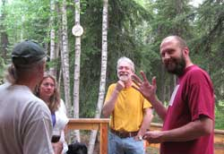
Be careful going any farther north. Those guys got run farther north than Fairbanks, not so much by their greater misfit nature, but by their wise decision to protect their intellectual acumen from the babblings, blasphemies and profound pontifications of the Fairbanks acedemians sloshing wine about the deck to punctuate their conclusions in regard to politicians, lawyers, bureaucrats and Oly cans.Oh yes, the real archeologists slinking around the periphery of the titled archeologists are looking for those Egyptian gold hordes buried with the Pharaohs. And from that rich history of real archeologists came the real Alaska archeologists who are called gold miners. They contribute the Oly cans to the archeological history of the far frozen north. Their real contribution to the knowledge of archeology is all the mastodon skulls with spear points often stuck between the eye sockets, that they find strewn across the frozen Alaska wastelands down in that muck. They sell the mammoth bones to titled archeologists for the gold they claim to be mining. It is an archeological conspiracy known only to archeologists, gold miners and BBQnight acedemians.
The later auxiliary lecture was given by the exploration team sent to the State of Washington to investigate the State of Wines in Washington. The team was hosted by Lisa of the Fairbanks Yakima wine vanguard, having established a forward observation post in Naches, near Yakima. The members presented various dissertations. Wines of the Red Mountain wine appellation in mid lower Yakima Valley were clearly more rich and robust than the generally medium-bodied Yakima Valley wines. But the real discovery was the soon-to-be-certified Naches Heights wine appellation, just north of the City of Yakima. Post card picture perfect vineyards. Unique terrior. Small pockets of vineyards (previously apple orchards) nestled in the Naches Heights uplands, among a lacework of basalt rock outcroppings bordering the vineyards. The pockets of soil are comprised of volcanic ash, thin layers of loess and old archeological remnants. The rattlesnakes in the rock outcrops are friendly, and do not bother the vintner or visitors. An entirely new vineyard experiment. All the grape varieties are being grown to identify which varieties will produce the best wine for that area.
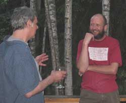
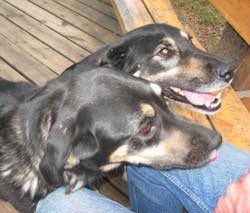
"The Tasting Room" of Wilridge Winery is a must-visit experience. After finding the quaint old farm house near the end of a dirt road winding somewhere through the Naches upland orchards, you may sit at the old Board Room table in the Board Room, or walk through the vineyard, with a glass of wine and conversation with the peacock. The view down into Cowitche Canyon elevates the experience.The BBQ wine selection for the evening included a couple nice wines from New Mexico, of all places. A hint of dry currents and agave distillate.
More was discussed and sloshed about, but the BBQnight lawyer who keeps his back to the camera advised the web slave to misrepresent what was actually said and sloshed about. In fact, he suggested entirely striking it from the record. It was something about rattlesnakes and politicians.
November 2009 BBQnights happening. Web Slave is in Montana, of all places. Reports to resume when he gets a round toit. Finally resumed, above.
27 August 2009: From somewhere among the cacophany of conversations came the arrangement of words: "Fairbanks does not so much grow on you, as it renders you unfit to live anywhere else."
Well, maybe Pburg Montana.
6 August 2009: (Photos in camera)
A bit larger than the normal gaggle of local adventurers and visitors arrived, but normality generally flees BBQnight upon recognition of the sorts who show up, so all was as usual. The web slave left early, so things may have become even less normal without adequate reporting.
A lawyer showed up, but we were able to make excuses for his questionable choice of professions. A river rafter told stories of his formal speaking class, in which he was learning how to become a speaker. He apparently had a difficult time regaining the confidence of his instructor after stating the class by inadvertently stating the word, shit, in the microphone. Ooops. The technical eloquence of a true man of the field alluding to the natural world being graced with the accents of bovine scat to assist with the understanding of the gradient of human perceptions, would have placed him among the great speakers of his time, but he is a river rafter, and therefore shit happens.
The wine selection included two wonderful Oregon Pinot Noirs, and the rich vanilla-coffee-tobacco flavor of a 2002 Masion de Pagette, On The Fence, by David Pagette in Washington. Abandon all hope, it was the last bottle in existence. The BBQnight crowd holds access to that which is most sought and least discovered by the humans, including certain remarkable wines. Now, if we could get that lawyer to understand the long range wisdom of a more eclectic selection of wine, we might act like we believe some of his excuses for becoming a lawyer.
Once upon a time, one of the Fairbanks true believers and radical supporters of the benevolent but horribly misguided National Park Service thugs was in the Alaska wildlands, enjoying the wilderness he so ardently protected with the legions of idiot armed government thugs "on his side" of the battle against humans, where the thugs in the field did not recognize his name from their office-located list of the privileged elite insiders, and treated him like the shit they consider all mere American peasants to be. He was later quoted as stating that the Alaskan Alpine Club had been correct about the stinking, malicious, self-serving National Park Service thugs. The pitiable Park Service sops act like all power-damaged minds, ignorant of their origin and existence as common humans making as many dumb mistakes as all other humans, believing their idiot government bosses who train them to believe that the Park Service (government) can do no wrong, and therefore its idiot employees can do no wrong, and therefore creating the most damaging wrongs of human potential.
Well, so another story of a similar nature, of less extremes, was recounted for the evening's lecture on Alaska wilderness management policies. Imagine the humor of the results of the DemocanRepublicrat War and Prison Regime hiring mentally deficient, never-questioning, young Washington DC government theorists, identical to unquestioning Marine Corp cannon fodder recruits, to "save the Alaska wilderness from those damn Alaska outdoor adventurers". Now imagine a couple of them from city center USA informing a highly experienced older Alaska outdoor adventurer that he must perform the dumbest, most ludicrous, illogical of the Washington DC Park Service idiot-drills, because the Bush/Obama team demands that he conform to the Central Regime dictates identical to the old Kremlin and Sheriff of Nottingham dictates. And imagine the laughter of the listeners, with a few comments about him having foolishly voted for the DemocanRepublicrat Regime that therefore subjected him to the unpleasant experience in the wilderness.
For the same reason the writer of these words could not understand reasoning people when he was an Army infantry lieutenant believing the lies of his highly titled superiors extolling the great virtues of murdering those those Vietnamese communist gook peasants, the Park Service dolts could read these words and would remain clueless of the illogicality of forcing Alaskans to act like the idiot Bush, Obama, Cheney, the Park Service main guy idiot and other Central Control Illusionists. The bears in the wilderness act like the bears in the wilderness, not like the illusions in the Park Service manual written by idiots inside the government fortress. The human mind, upon the damaged caused by the adoption of institutional power, such as accepting a police, lawyer, military or government bureaucrat job, was designed to fear questioning the illusions of institutionally created titles, that is, until it belatedly starts doing so, if it is so fortunate as to encounter sufficient incentive, and thus laugh itself to tears over its prior illogicality. Enjoy the show, and hide from the pitiable Park Pigs if you are in Alaska. The humans will eventually evolve out of their intellectual dark ages identified by the era of wars and US National Park Service Pig maliciousness.
The moose steaks and brats on the grill were appreciated. The Sitka deer stew was luscious. There was the consideration of the absorbent layer of material used to absorb liquid in the bottom of the little plastic wrapped Styrofoam trays on which steaks are sold at the local grocery stores. Well, they end up looking so much like the meat that they often stick to, that they are put on grills to cook. The thick black smoke is the first indicator. Global warming is the verification.
The Alaskan Alpine Club current historic museum donations program was advanced.
And the adventure plans are being kept secret, of course, much to the irritation of the Homeland Security Gestapo currently being assigned to every group of 25 or more Americans who assemble for any reason. We tell them about the lawyers plotting terrorist activities in remote wilderness locations with secret stockpiles of whatever we invent at the moment, on specific dates. We laugh when our colleagues in nearby areas or along the approach route report their sudden arrivals in black helicopters. The metaphorical dragon is eating its tail, on schedule. But the dragon can claim success. The government illusions of the lawyers have not been successful, if you can imagine such a result of illusions.
31 July 2009: The CameraMan was lost out in the smoke somewhere, but the official chronicler presented the following report.
It was smoky. The usual interior Alaska forest fires were burning out of control as usual. One was just south of town on the other side of the Tanana River. Occasional ash was dropping onto the deck. The thermometer was in the 80's or 90's. The food and wine were superlative as usual. The new grill produced an ample variety of vitals.
Raising chickens in Fairbanks, for eggs and meat is what any wise person with the opportunity would do, as well as a garden of course. The world food production has had to match the obvious overpopulation of humans, therefore inherently diminishing the quality of the food. Huge commercial agribusiness must produce X tons of zucchini from the same economically optimized area of land at increasingly short intervals, requiring those economically optimal fertilizers that make zucchini look like good zucchini, and chicken meat look like chicken meat. But what makes a plant look good is not what makes a plant nutritionally optimal. The mineral diversity of grocery store food is diminishing. Plant your garden early next year, and get out in the woods to pick blueberries.
However, in contrast, the nutritional and health values of hemp have been progressively increased because government keeps hemp production individually customized with maximum incentive for individuals to improve it every way it can be improved. There is no big hemp agribusiness production in the US. Knowledge of the varied human health benefits of the 60 canabinoids in hemp is escaping from under the government jackboot. Another recent study demonstrated that about 30 days of oral or injected THC significantly reduces several diseases. In addition to their own verifiable merits, the credibility of all hemp studies conducted outside the US Police State is enhanced by the government attacks on the studies and hemp.
That is the same government which brought the world so many wars and destruction after WWII, one after another, based on the rhetoric of peace and rebuilding. When peace is said to be achieved by starting wars, the beneficial attributes of hemp that is said to be destructive, is obvious. The government chaps are cluess as to why commonly intelligent people laugh at them. And shall we mention the layers and layers of taxation on everything and anything that gets close to everything, each time in the name of reducing taxes, to pay the military industrial complex to conduct the wars?
Pity the amusing cops who individually stumble onto the knowledge of the benefits of the canabinoid compounds, after or while members of their own families could have benefited from that knowledge if ignorant cops had not been maliciously arresting people who harm nobody and seek to benefit the lives of others in society.
Construction tools were debated. The rattle tapper requires a tolerance for its rattling, and a knack for handling its tapping. Otherwise, a plain screw gun is preferable.
The current report on rock and ice climbing around Nome involved tales of desperation, as would be normal for the activity, the area, and the classifications of people who would be attracted to the area. The fact that the knowledge of the extensive climbing opportunities around Nome is reaching the periphery of civilization, for the first time, indicates the ongoing evolution and advancement of the human phenomenon. Nome also offers king crab. Well, without the king crab and beaches covered with gold, Nome would be left as a community of climbers, of course. We at BarbecueNight.com understand how the world works, as you recognize.
More was reported. National security concerns required most of it to be redacted.
9 July 2009:
THE NEW GRILL was inaugurated, with the last of last year's Chitina Red's from the freezer of one of the regulars. The fresh garden greens were in abundance. A couple gourmet dishes were enjoyed along with some usual fare. Fine wine, and we are certain that because we discussed issues of profound substance, that the substance will happen.
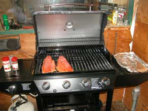
Last week's ice caving adventure in the Alaska Range was discussed in detail, including the survival from a a small ice block of a few tons shifting just enough to pin the person attempting to crawl under it. That required some innovating contortions and assistance, but no chopping or blasting, so the adventure continued. Some North Slope rivers are in the plans for more runs this summer.Over at the outside end of the table on the deck the aspect of the Kennedy assassination conspiracies worthy of noting by those objective to the concept of conspiracies in whole, is that while it was just another killing of just another national leader, it was, for perspective, the equivalent of assassinating Caesar during the 800 year rule of the Roman Empire. At that point in the gradient of such phenomena, the degree of incentive for a successfully planned, and successfully executed murder, and the time required for such a process by any mind or minds, within the design of the human mind, precludes the simple, single deranged person scapegoat that the large institutions consistently pandered to fool fools who do not ask enough questions about the organizational manifestations of human fundamentals, quite obviously.
Therefore, the traceable connections to the participants, in this case the conspirators, and their reasons for murdering said person, become known in time because humans hold no ability to sustain any contradiction, by design of the human mind, a contradiction identification and resolution device. After the general public interest is exhausted because people have too many other things to do, and the normal human manifestations of new atrocities is ongoing, the test of time reveals that in fact an extensive conspiracy occurred. It is just normal human activity within the organizational manifestations of human fundamentals.
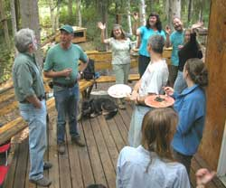
This is within the context of conspiracies, not the objective description of the inability of humans to create or sustain conspiracies which are in fact just diverse humans normally taking advantage of small isolated sets of events and actions that benefit those humans, but are part of other such sets that objectively, not controlled by any one or few individuals or groups, appear to be a large conspiracy since all human actions are connected anyway.However, of interest to those who do not believe in conspiracies in the common context, most of the conspiracy theory chaps satisfy their mind's extent of curiosity short of the useful knowledge that can be derived from what they learn.
It is the commonalities of all such conspiracies at that level of human activity, in all nations throughout human history, that offers useful knowledge of the human mind's process, common to the otherwise vast diversity of human minds, revealing in part the singular design of all human minds. With that knowledge, one can do things that all the conspiracy chaps, and everyone else except the few observers, cannot believe, for the same reason most people believe the usual political lies pandered by the common news media, and thus do not believe the conspiracies. They simply stopped asking and answering the obvious questions of each next contradiction revealed by their own answers to the previous questions. They trained their mind to stop learning new knowledge, instead of training their mind to continue to learn new knowledge.
Of course the power-damaged minds of the pitiable government personnel stop asking questions sooner than all other people, and thus remain the most ignorant of what they are doing, and of humans, but even the folks who are so curious for new knowledge that they learn the entire, verifiable sequence of people and events that proves the extensive conspiracies, train their minds to stop learning knowledge short of the more useful extent of what they learn.
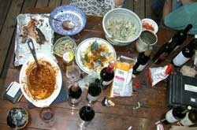
Therein, as usual, the test of time is revealing the increasing number of contradictions in the government's news media explanation of the the airliner bombing of the World Trade Towers. They were in fact bombed by Osama's guys, the most brilliant military attack in human history, but his prior known, intended action was intentionally facilitated since before Osama thought of it, (rather than stopped) and executed vastly beyond Osama's abilities by our dear and benevolent friends in the US government. But that now increasingly verified fact, the culminating delight of the conspiracy advocates, which the ignorant little government thugs are still squirming to hide and obscure, is only a useful item of data, among all the metaphorical stabbing of Caesar events that assist in the completed, flat out astonishingly useful goal of understanding and verifying the complete design of the human mind, by those who simply kept asking questions. What the government thugs most fear, that they will be (have been) "found out" by anyone actually asking and answering questions, is that for which the observers then relegate them to the pitiably little ignorant sops that they are among the gradient of humans playing their "school yard bully" part on a small school yard.By design of the use of force, the government thugs (Cheney, Bush, Obama, Clinton and their ilk throughout human history) who inherently hold human life in contempt, only end up having to plan and carry out their next attacks and murders because the previous ones (inherently) did not achieve their desired goal. They could have their desired goal, with all opposition defeated, without anyone being killed or found out, or having to fear being found out, if they simply asked and answered more questions of their planned actions, to learn the design of the human mind, therefore including their own, and use that knowledge.
And that was only the discussion over at the outside end of the table on the deck. Over by the grill, the mineral potential of the Seward Peninsula went off the end of the scale, out into the ocean.
A MAGITO zinfandel showed up. Wonderful wine.
And the 1994 gelatinous particle rain that happened for a week, in Poulson Washington, that made several people sick, including the local police, and killed some dogs and cats, that the news media explained away with the Air Force's ludicrous story about jellyfish particles getting into the atmosphere, is becoming more known. The greatest threat and damages to the common people have always been from their own government. The magnitude of the US government's current power is inherently creating the greatest threats and damages to the gullible Americans who keep believing the mainstream news media, much to the amusement of those who observe the human phenomena.
One of the local Sikh's expanded our knowledge of Sikh's. To that another chap informed us of what he learned from the Punjabi Sikh taxi cab drivers in Seattle and Washington DC.
Hey, the web slave has to get the laundry done and some AlaskanAlpineClub projects worked on. Outta here.
2 July 2009:
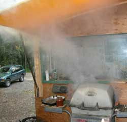
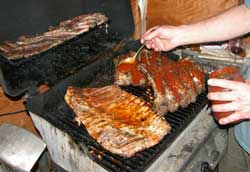
The evening's dissertation compared three of the better Yakima valley (Washington) wines, in hand, with rumors of fine wine in Wenachee Washington. The rumors were offered by the representative from Wenachee who arrived with stories of wildlife habitat management instead of wine. We suggested a remedial training course in priorities. The wildlife has done well without habitat managers for millions of years. However, insufficient wine has resulted in the US DemocanRepublicrat War Regime's ongoing Presidential Ego Gratification Wars which continue to damage vast areas of wildlife habitat and vineyards.
The cool new super-structural yellow awning over the old barbecue grill is the time-issue reason the new barbecue grill was still in the box on the deck. We anticipate the new grill to be out of the box, ah, soon. The photo of the old grill indicates the reason for the new grill. If the old grill was cleaned, there would be no flame spreader under that charred structure of grease. Yes, the flame somewhere under that black mess is on full throttle in the photo.
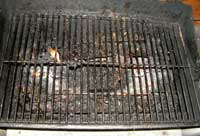
The pecan-garlic Chitina Red salmon was appreciated but could not compete with the volume of BBQ-sauce-slathered fat laden ribs of some animal that got too close to human habitat managers. The dogs love the grilled rib functions. They are more practiced than humans at gnawing on ribs.
The kale chips made by Alice were most delightful. Kale leaves rubbed with oil and something, dried in an oven. I recommend them. Other fresh garden greens were abundant.
There are always a few farmers in eclectic gatherings, who can tell stories of having to have shoveled entirely too much cow manure back on the farm. But upon the common old question... "So what have you been doing lately?".... one does not expect.... "Just shoveling goat poop". Well of course the Fairbanks farms include goat farmers, some of whom would naturally show up at BarbecueNight.com. And we look forward to goat ribs on the grill some day.
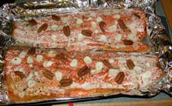
A glacier ice caving trip was scheduled for the subsequent weekend, then a Valdez halibut food gathering expedition the following weekend. The prestigious Alaskan Alpine Club world headquarters shed project was discussed by the carpenter crowd. Actual new wood, store-bought floor joists and 1 1/8 inch floor plywood will support all the scrounged old 2 x 6 lumber of questionable qualities for the wall framing. The 30 foot long white plywood Club HQ roof ice axe advanced, with an offered donation of some plywood. It will be on the black roof for the next Google Earth upgrade photo that will make the Club HQ more easily spotted. Well, climbers need pictures. They get lost with maps if there are no mountains.Expect new grill photos next time, maybe.
25 June 2009:
The new barbecue was sitting on the deck, still in the box. The old barbecue was used this last time to grill fresh prawns brought by the guy with a friend with a shrimp pot in Valdez. They were a fitting last gourmet taste treat from the remnants of the famous old world-known BarbecueNight.com burnt-out grill.
Well, we asked nearly every grill making company if they wanted to donate a grill to BarbecueNight.com, for the superlative advertising potential. They all declined. Maybe they reviewed BarbecueNight.com, and did not recognize any potential among the standard market of grill buyers. So if you are reading this, all the grill makers consider you to be, ah, of the nature of the eclectic elite grillmeisters who think outside the boring American back yard griller sorts at the center of the bell curve of average mediocrity. The new grill was purchased as a wedding gift for the magnificent hosts of BarbecueNight.com.
The evening's scheduled lecture on gravitational field survey techniques was presented by the individual who was shortly off to the Naval training facility for qualification process to be on Navy flights for said surveys. She is an interesting person born in Russia, raised in the US, knowledgeable of the world, and intrigued with advancing knowledge. Near as the web slave could recognize from the technical terms of the lecture, they were going to use the Newtonian experiment to measure gravitational fields across Alaska. They would fly along and periodically drop an apple from the airplane. If the apple fell downward, there was a gravity field at that location, or something like that.
The salmon was from the Copper River, of course. The purple onions were an upgrade from the cheaper yellow onions. The tangy fresh mustard greens were from Marianne's garden. The other fine foods were from other places, and the wine was from the wine stores of course. There were some well selected wines.
The committee report on the progress of the Alaskan Alpine Club door brass plaque design refining included the chairman's statement: "I liked the the deadline. Whenever it is finished." The project is on schedule.
The internet-facilitated shift from the American addiction with the money-corrupted pharmaceutical industry, to the old ways of eating healthy food and correcting anomalies with inexpensive herbals was discussed. The difference is the knowledge of the foods and herbs, which requires a bit of time to learn, versus the money easily handed to the doctors to be told what pills to take which only requires money handed to the pill purveyors. It seems that the doctors and pill purveyors figured out that the pill takers did not want to use their time to learn any knowledge, so the doctors and pill purveyors told them to take pills that never correct their health problems, and only perpetuate those problems so the pill takers would have to keep handing more and more money to the doctors and pill purveyors for the illusion of doing something useful about the health problems that were never solved. It is amusingly easy to fool the humans. Give an ordinary human a title such as doctor, pharmacist, police, lawyer, judge, senator or president, and the humans will believe them while they will not believe the guy next to them who only knows how to tell the truth rather than how to get titles.
They even still believe that a problem can be solved by killing the people their idiot leaders with political titles decree as "terrorists" and "enemies", for "security", while security therefore never happens among the increasing number of people around the world who become more angry with the people whose military goes around killing people in wars for the illusion of solving the problems that killing people create. And not content with merely killing people, the Americans torture foreign prisoners for the ego delight of Dick Cheney, Bush and Obama, oblivious to the consequences in the minds of the world. Anyone else would have to buy a ticket all the way to planet Earth for a comedy of this magnitude.
We were saddened to hear some results of the economic depression. One of the local part time summer adventure assistant guides was having to do carpentry, house repair and other actual work to survive, because not enough Silicone Valley sorts were coming to Alaska for adventures. Tough times.
The evening Juneau Report did not arrive, but rumor has it that our Juneau colleagues are keeping their sailboats in good working order so we can get onboard and out of the rain if we ever encounter them in a remote bay while we are sea kayaking in the area. We would help them pull their shrimp and crab pots, of course.
Don the artist claims to have done something with some art photos lately. American productivity is therefore resurging, and we can expect Obama to take credit shortly after his staff reviews BarbecueNight.com.
Vastly more was discussed, but it must be kept secret because the web slave is not authorized to reveal the truth about government. He is already on the yet growing terrorist watch list of Americans, for revealing whatever it is that he said, wrote, thought, or was suspected of thinking. And you are most likely on the DemocanRepublicrat terrorist watch list for reading these worlds. Admit it to nobody. Some of your friends were hired by the Homeland Security Gestapo, maybe even your brother or sister. Notice that they have been a bit curious about your activities lately, comrade.
And there we jolly well have it.
18 June 2009: Dignitaries from around the world and the nation arrived, albeit as usual. Profound concepts were exchanged.
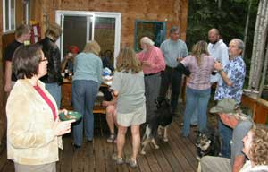
And the prestigious Alaskan Alpine Club door brass plaque artwork project got handed off from the club lapel pin project guy to the guy who can photo-shop the pin art up to door plaque size and make the rope look more like a rope at that size.Big Saturday night pig roast and live music out at Sarah's place next Saturday night. Much discussion centered on that party. I think it has something to do with a wedding, but the web slave does not know much about weddings, so the pig roast and live music were the primary topic he heard.
A certain world renowned local caver of deep caving credentials appeared, from his cave. And to suggest the questionable nature of cavers, he introduced his daughter to the BarbecueNight colleagues. We enlightened her on all the truths of Alaska adventure, which were disputed by the more reasoning females of the crowd. We are certain that she will successfully embellish our stories to the magnitude of the distance back to her home in Tennessee caving country when she gets back there this summer.
The Savoonga Report was the formal lecture of the evening, from the guy who just got back from Savoonga on St. Lawrence Island, where the famous St. Lawrence Island Siberian Style smoking pipes are made, or were made. Well, they were old style pipes, made from rifle cartridge bullet lead inlaid in broken gun stock walnut wood. Something about chewing on the lead pipe stem, and smoking fumes from the lead bowls, led to a steadily diminishing use of the pipes, for a mysterious reason. Pass up no chance to vacation at the island paradise of Savoonga, St. Lawrence Island. Make reservations early, or try the off-season.
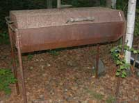
The camera guy did not get to the food display until it was too late, so no food fotos. The salmon was elegant as usual, and the chick-pea salsa salad was so good we encouraged the person who prepared it to go commercial with the product.The photo guy walked out in the trees to take a picture of the carefully guarded old Valdex Exxon Oil Spill project grill, made by the guy who was supposed to have been welding on the clean-up barges. It is still scheduled to be upgraded with propane, just as soon as the grill project guys get a round toit.
That's it. The web slave must get back to other projects, and get his jeep fixed so he can get to the big Saturday pig roast and whatever else they are doing at that party.
May. Web slave working on floating islands at Yakima Washington. Betty on Betty's Island has a new solar powered light for her computer desk. Cool.
15 April 2009: What? You say that 15 April is not a Thursday? Well, there are so many 15 April Tea Parties protesting Taxation With Misrepresentation going on this year around the nation that the BBQnight bunch could not ignore the clamber of fellow common citizens victimized by the insatiable IRS. So the local adventure crowd held a pre-BBQnight tea party, with tea, and maybe some wine.
It is a little difficult to throw the over-taxed tea into the harbor here in Fairbanks, because the harbor is a few hundred miles away, so we just threw the soggy tea bags into the garbage. We only bought a few token over-taxed tea bags for the party. We normally drink untaxed black market tea.
Pity our friends in the IRS, some of whom (too few) are belatedly figuring out that the money they steal under threat of prison does not go for the schools, or roads or police protection, fire departments, defense of the nation or anything the people need or want.
They are noticing the foreign news reports (reported everywhere but in the US) about how many huge families (with servants) of foreign military generals and colonels are moving to the ritzy areas of Jordan, Egypt, France, and other safe places, suddenly rich, spending American dollars from Swiss bank accounts.
Meanwhile the US government accounting agencies keep reporting and reporting and reporting that for some strange reason the hundreds of billions of dollars that American taxpayers paid for "foreign aid" and "reconstruction" in Iraq, Afghanistan, Pakistan and many other countries, produced no schools, roads, hospitals, electricity, sewage treatment plants, clean water supplies or anything else we were told as the reason for the IRS taking our money. The money simply disappeared, or went to "security" that produced no security, verified by the US government accounting agencies. It magically reappeared in the Swiss banks accounts of wealthy government insiders. Actual magic.
And the taxpayers who are trying to keep up with basic living expenses, increasingly without success, are figuring out the billions of taxpayer dollars going to the private bank accounts of banking CEO's, military industrial complex CEO's and other political insiders.
Then there is the legion of US Congressional staff with salaries of way over $100,000 plus full medical benefits, lavish perks and superlative retirement benefits, who keep quiet about the rampant corruption and money flow in Washington DC, but are reported to be making jokes about how laughably gullible the Americans are for believing the obvious lies of Congressmen whom the gullible voters keep voting back into office.
Our respectfully offered tea party recommendation to IRS personnel is to get a job for which you and your family will not be horribly ashamed after the inherent collapse of the over-printed US Dollar, reducing the middle class to poverty, soon brings forward the accounting of where all those IRS-seized dollars went. The American taxpayers had to work to earn the money that was seized and given to the government insiders who lived lavish lifestyles the common taxpayers could never access because the money they could have invested for their future was seized by the IRS.
No mere job is worth your heirs having to keep denying that their parents or grandparents worked for the IRS, or enduring the shame among those who work for a living rather than living off money stolen by the IRS.
During the event, when we could hear the phone over the noise of the rabble rousing, trouble causing, arm waving, some name calling, general carrying on and vocal dissertations on the way those guys ought to do things, the phone rang and we got a report on what the ProjectNight.com chaps were doing over in one of the shops. The every Wednesday Night Project Night crew were also doing a tea party tax protest whooptidoo, and in the background some rather descriptive language was being used, for some reason.
We raised a toast of fine wine, er, untaxed black market tea, to the many Americans around the nation in 2009, who took the time to associate with our colleagues of history, who threw the wealthy British king's over-taxed tea into the Boston harbor, and then abandoned the rule of the repugnantly wealthy Washington DC, er, London government aristocracy.
26 March 2009:
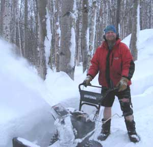
Yes, that is the well known and highly revered formal host of record for the famous BBQnight.com, in his traditional shorts, and a recent leg brace that should be a body cast, doing a little pre-BBQnight preparation in anticipation of some dignitaries who are not accustomed to shoveling their own way into the drive way.
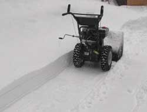
He is showing off his new snow blower that used to be a snow scoop. Give these guys a credit card and a leg brace, and watch how fast they catch up with the neighbors.
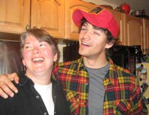
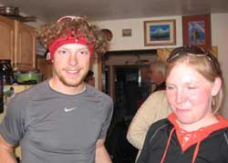
That is one high quality plaid shirt worn by the guy who knows which Scottish clan to honor with his visual endorsement. The clan knows how often to have fun.
And that is Tyson and Davya, the first time ever in the same year husband - wife Zonnet Kaazoot ski champions. The clan knows how often to stay in shape.
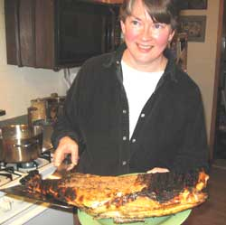
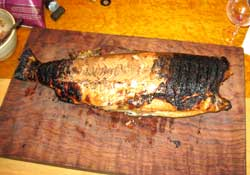
And that is just a little Alaska fish that was paired with a gourmet Lousianna cajun blackened fish recipe that had everyone's mouth watering and fired-up to full spice speed. Anyone not there wish they were.
Of course the curly babinga cutting board on the birdseye maple counter top graced the display for the wood-astute crowd.
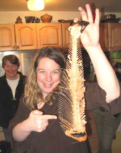
Apparently the fish recipe met with the approval of the BBQnight folks.
Because the epicureanary qualities of BBQnight are the scheduled theme for 2009, the year of the epicune, the epicurean committee decided to release, for the first time ever, the Montana Snow Geese Spice Spread. This is only possible because the individual-thinking Montana folks, especially the P-burg crowd and their colleagues in several obscure Montana towns that must not be named, maintain a close collaboration with the individual-thinking Fairbanks Alaska folks who can't get farther north without sacrificing convenient wine pushers, who have both noticed a bit of an olfactory insult from whatever is rotting in Washington DC.
For the Montana Snow Geese Spice Spread use fresh ingredients only, preferably organic, or the best you can do with what showed up. These ingredients are among the most recently confirmed most long known most effective health repair substances for those who failed to take all the good advice about health maintenance by using the same ingredients sooner. Grind the turmeric and peppers in a stone mortar chiseled from the granite seams of Baldor, or one of those places. Tell no one....
1/4 cup of turmeric.
1/4 cup crushed fresh garlic (10 cloves)
1/3 cup fresh grated ginger root.
1/2 cup extra extra Italian olive oil.
1/8 cup of Malabar (India) black pepper corns (Kampot black pepper
if you are of the Indonesian clan).
1 Tablespoon Agave nectar.
Blend in a mini quizanart, and spread on gluten free multi seed
rice bread or crackers.
Then shoot the top off another bottle of vintage wine and don't forget to stop by BBQnight.com if you hold knowledge of remote places in the universe, that nobody else will believe.
19 March: The report of the unopened bottle of wine that graced the BBQnight floor upon impact could not be suppressed or covered-up due to the presence of possible whistle blowers, blackmail artists, blabber mouths and a few government informants, one from a yet-to-be-formed government operating from a surplus submarine in a remote Alaska seacoast bay. The decision was made to publicly report the incident, blame the sommelier, impose sanctions, and create a new wine handling oversight commission until the wine fully evaporates along with any interest in the report. All cameras were immediately confiscated. The pixels pulled out and exposed to light to over-expose them, just to insure later deniability if a wine crimes commission under an opposing political faction is ever convened to review the incident.
Fortunately is was not the best bottle of the evening. But neither were any of the others. The quality of the wine has offered more opportunity for discussion with the economic difficulties caused by the Bush and Obama Presidential Ego Gratification Wars and a few hundred financial investment company CEO's raking several billion dollars off the top of the public stock market investments every year for the last several years. A billion dollars here, a hundred billion dollars there, and pretty soon we are talking gold.
The welcome spring warming was attributed to global warming in the northern hemisphere, causing the additional fear of hemispheric warming. No problem, Obama is on it, and a new hemispheric commission is being formed. Keep paying your taxes.
The discussions of the local cross country ski races involving the national-level skiers in the area are in full stride, being watched and discussed by even the moose along the trails. The discussion of Tyson and Davya, husband and wife, each winning the Sonnet Kaazoot races was cool, the first time that has happened in the same year.
The insider reports of the increasing rumblings of Mt. Redoubt caused the usual speculation about an eruption and possible end of the earth, or at least another puff of steam or ash.
A lecturer on gourmet food graciously introduced the suggestion that the BBQnight food presentation preparation process be enhanced for subsequent BBQnight photos, or the photo guy will have to take photos of the pictures on some cookbook pages and add some BBQnight rhetoric for the website pages.
And that is the full report from the wine floor.
5 March...
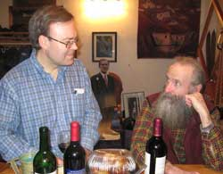
We were most fortunate to be visited by a guest lecturer on corporate and organizational teamwork efficiently and motivation, a gentleman from one of the larger cities, or something like that. We presented a significant challenge to his skills, but he may have prevailed in some regards, certainly not for the guy in the beard whose last and perhaps only teamwork was when he asked for help in removing a stubborn cork from a vintage wine (October).
A Google Earth enthusiast suggested the interesting botanical adventures available on the island just off the northeast corner of Somalia, not far from where the famous Somalian Pirates have become the envy of every pirate in human history. I mean to say or print that when a few ragtag guys in a small open top, outboard motor boat, with paltry AK-47's, having only the advantage of courage beyond anything the world's over-self-flattering militaries can boast, and perhaps cahonies the size of cannot balls, can go out onto the open ocean, chase down huge ships, including an oil supertanker, throw grappeling hooks over ship railings far above them, board, seize, and get ship-passage taxation in the millions of dollars for the benefit of their desperately poor villages in Somalia, becoming heroes to the financially poor masses and adventurers of the world, that is a wealth redistribution system that the poor of every coastal nation should pursue.
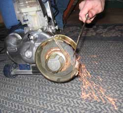
And the dumpster-find Kirby vacuum cleaner crowd was dazzled by a jolly good show of the old Kirby vacuum cleaner shop grinder attachment that every household in the 50's should have. If you need to sharpen that kitchen knife on the living room hand woven Persian carpet, with just a few flips of attachment devise levers you can just start grinding away and then vacuum up the metal dust that did not burn its way into the old Persian nylon fibers of the carpet.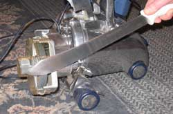
You can therefore imagine what-all arrays of knowledge are routinely presented at BBQnight.com, that do not make it past the web slave editing process.
Anyone else would have to endure eight years of college for a PhD to get educated that much.
December 08 - March 09: BBQnights happened. The web slave was absent most of the time. The reports will begin again, ah, soon, and then, somewhat. Some reports are scribbled on paper towels, and will be uploaded long after the fact.
Good time to fire up your grill and uncork your wine cellar. Do not be too conservative. They are making more wine right now. And discuss concepts never before considered by humans.
11 December 2008:
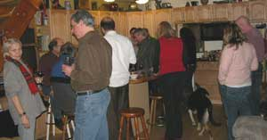
There are now so many vineyards and wineries in the State of Washington that a thick book has been written on the subject. Washington Wine Trails. We reviewed the book. We did not find any of the trails, but we drank the wine.
Martin of the kayak showed up. He mentioned a particular island on the Alaska coast. Most of us had not even noticed it despite its large size. Most interesting. It is made an island by a bay and a river. Now we have a full report on it. The kayaking there is so good that the location of the island must not be mentioned. No problem, just start at the south end of Alaska and paddle around all of the islands until you reach Barter Island. Send a full report.
The profession of Caretakers as a specialty has become so significant, as a result of the huge human population and inherent specialization, that its associated arena of communication skills is becoming refined and known. With greater examination and discussion of that knowledge, more knowledge is being created. The solution to certain long enduring social and individual problems associated with doctors speaking in technical terms of recent creation, not effectively communicating with older people who know more of life than the doctors, but not the newer medical terms, are being discovered with the new knowledge illuminated by more refined and accurate communication skills learned by the caretakers who learn both ends of that spectrum. All problems are solved with more communication, a concept that politicians and bureaucrats will never discover, since they are clueless of the process to answer questions or tell the truth.
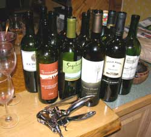
It was suggested that males who wear suits, among social groups wherein males do not commonly wear suits, are preferred by females, for marriage. There is however, that portion of females who are attracted to the less well dressed males because the females want to change them. This discussion led to several interesting concepts yet undiscovered by modern anthropologists who have not discovered the anthropological knowledge resource of BBQnight.com.
The lawyers were talking to the lawyers, about lawyer things, which is common for most interest-groups, such as climbers talking to climbers and farmers talking to farmers, except more common for lawyers because nobody else really wants to talk to lawyers, for obvious reasons. Lawyers think it is cool to fool other people into thinking that the lawyer term "pro se" only means that you are representing yourself in court. When other people find out what else it means, they learn another reason (of countless) to hold lawyers in unmitigated contempt. However, an occasional lawyer appreciates good wine, so together we can genuinely appreciate the good wine you bring to BBQnight.com.
Some comments on federal lands were overheard. American taxpayers are forced to pay more taxes so that the Bureau of Land Management (BLM), and all the other government bureaucracies doing the same, can spend millions of dollars each year advertising BLM and public lands, glorifying BLM land as though BLM personnel provide that public land for the public, suggesting you visit their land. The mental midget BLM'ers are so damn stupid they cannot comprehend the concept of taking money away from people to tell them to visit their own public lands they can no longer afford to visit because the BLM'ers and countless other government bureaucracies took their money to buy commercial advertising to tell them to do what they therefore can no longer afford to do. The wealthy elitist US government cannot be collapsed too soon, and will replace the analogy of the failed Roman Empire.
Page 10 September 10 - Present
Page 1 November 06 - April 07
Page 2 May 07 -------- August 07
Page 3 August 07 ----- October 07
Page 4 October 07 ---- December 07
Page 5 January 08 ---- February 08
Page 6 February 08 --- March 08
Page 7 March 08 ------ September 08
Page 8 September 08 - December 08
Links